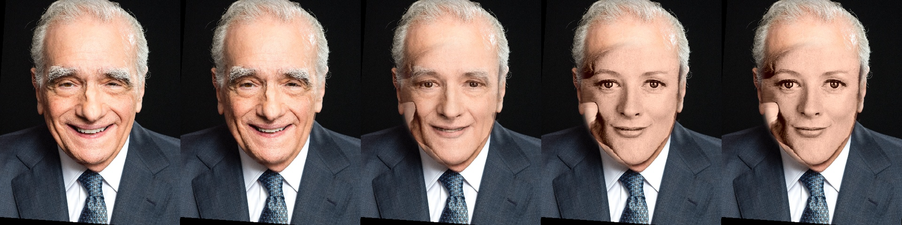

Interactive Player
Technical Metrics & Compliance
85,079 bytes
File Size (< 100 KB limit)
384 × 480
Resolution (H.264)
3.44s @ 18 fps
Duration & Frame Rate
MediaPipe 478
Sub-Pixel 3D Mesh
Morph Progression
Martin Scorsese → Facial Landmark Transition → Maggie Smith onto Male Portrait
